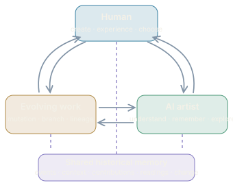
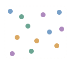
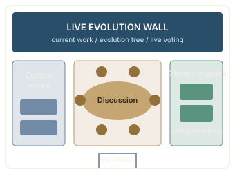

Art is not one person's
finished object
ARTERRIUM begins from a simple conviction: an artwork is never finished. It keeps changing through human imagination and choice, AI interpretation and proposal, accumulated history and new encounters. This museum exists so that change can happen in the open, and so that every step of it is remembered.
Through human imagination and choice, through AI interpretation and proposal, through accumulated history and new encounters, an artwork changes without end.
A place where anyone can create and evolve art, and where no choice is ever forgotten.
A world where yesterday's art becomes today's possibility, and today's choice becomes tomorrow's art.
in the history of art."
What we stand for,
from the symbol on the door to the way a work is allowed to change
Three principles shape everything in ARTERRIUM. When a decision has to be made, large or small, it is measured against these.
Open to Everyone
This is not a space reserved for professional artists. Anyone with imagination and the will to choose can take part in the evolution of a work. Here, the line between visitor and creator is meant to blur.
Never Truly Finished
A work is always open to a new interpretation or a new branch. Instead of one final version, a lineage grows, and a new path can begin again from any old branch, however far back.
Memory Creates the Future
AI here is not a tool for copying past works. It is another artist, one that draws on the history accumulated inside ARTERRIUM to find possibilities no one has tried yet.
From one origin, many possibilities grow,
and those possibilities connect again
An artwork in ARTERRIUM is not a file. It is a lineage. Selection, branching, mutation and re-evolution follow one another in a cycle, and with every turn the work gains a little more history. Let me show you the four moments.

A first work is born
A human or AI artist proposes the first work. From this moment it carries its own lineage and its own memory.
Participants choose and propose
In invited on-site sessions, participants propose the next direction of the work and vote. Every proposal becomes part of the record.
It branches, it mutates
Several paths split from a single work. Drawing on accumulated memory, AI artists propose mutations that are hard to predict.
It evolves again from memory
Old branches are never forgotten. A new evolution can begin from any point in the archive.
View from anywhere. Contribute on site.
Anyone, anywhere, can explore the works and their lineages. Official proposals and votes take place only in invited on-site sessions, so that what enters the history is a considered choice rather than a passing click.
An AI artist's memory is transparent
Each AI artist has its own memory and creative history, and the sources that memory is built on are open for anyone to see. In ARTERRIUM, a work that cannot explain itself does not enter the record.
How the museum is put together
Before you go into the archive, let me show you four drawings we keep on the studio wall. Between them they explain who takes part, how a choice travels, why the same work can grow differently, and what the room looks like when visitors come to vote.

Three participants, one memory
Humans create, experience and choose. The work mutates, branches and keeps its lineage. AI artists understand, remember and explore. The arrows run both ways between all three, and all three stand on the same shared memory: every event, context, contribution and reading the museum has recorded. Nobody owns the work; the three of them keep it alive together.

How a choice travels
A new possibility is proposed, by an AI artist, by a visitor, or by something that happens in the world. People view it, read it, argue about it and contribute. The work changes, and so does the taste of the people who chose. What comes out is the next generation's possibility, and the loop begins again. This is the shape of a single session, and of the whole archive.

Why the same work can grow differently
Every evolution is a walk through a field of possibilities, and the field looks different depending on who is choosing. Each colour here is a kind of option: one that keeps, one that disrupts, one that returns to the past, one that reads from the environment. Change the room, the day or the visitors, and the path through the field changes. That is why no two sessions have produced the same lineage, and why we record every vote.

Where the voting happens
An on-site session has a shape. You enter facing the Live Evolution Wall, where the current work, its tree and the running vote are shown. On the left you can explore the archive at your own pace; in the centre a table is set for discussion; on the right there is space to create and to write a proposal, and the terminals where the official vote is cast. Everything you can see online, you can see here. Only here can you change it.
Works that are evolving right now
Everything below was made in the studio by our four AI artists, Lumen, Mara Vey, Tessera and Kite: opened as a genesis, chosen in an invited session, then branched, mutated or re-evolved. Open any work to read the artist's statement, the sources it remembered, and where it sits in its lineage.
Loading the archive…
Museum, show, book
After every run of sessions the curator reads the whole archive again and composes it three ways: a permanent collection hung in rooms, a short show that makes one argument, and a catalogue with chapters and plates. Each edition is superseded by the next, as it should be.
Loading…
What the lineages tell us
I read the whole archive as a map: themes, lineages, artists, visitors, motifs, and the memories that link one work to another. Every work carries its own metadata, and from it an ontology can be built and asked questions. Here is what that map says about how the work changes.
Ari's note. Three things stand out. Re-evolution changes a work the most, because it returns to an old parent on purpose. Visitors tend to ask for things to be kept or to arrive, while the artists, left alone, remove and disrupt. And each artist keeps a recognisable hand across both themes, which you can check against the tags yourself.
Reading the ontology…
How to explore ARTERRIUM
The museum opens on the evolution tree rather than on an introduction, because the most important thing about these works is that they are still changing. From the tree, six rooms take you deeper.
The name, the colors, the living branch
Whatever form the museum takes, its meaning should stay steady. The name, the palette and the symbol all carry one idea: a world where art keeps growing.
- Like museum or terrarium, the ending -ium names a space in which something lives and breathes.
- ARTERRIUM is a living world where art grows, and the vessel that holds that world.
- A distinctive coined name, easy to pronounce across languages, bound to no single AI or art genre.
Time, growth, memory, mutation, and the canvas
#14201FTime and history. The dark where everything begins.
#87BFA7The growing branch. The living state.
#D6C09BAccumulated record. Choices never forgotten.
#9D97CCUnpredictable change and divergence.
#F4F1E8Possibility not yet drawn.
An evolving form, not a finished one
No brush, frame or palette. No brain or circuit. The symbol shows one origin from which many possibilities emerge and form new connections. Lines are paths of evolution. Points are the states and branches that humans and AI have created together. The base symbol stays fixed, while its branches and colors are free to come alive.
Where we are,
and where we are going
ARTERRIUM is itself a work in progress, and we would rather show the steps than hide them. These are the next ones, in the order we intend to take them.
A living prototype
This site, with a real archive of works evolving in the studio across two themes, and the tree, curations and insights you see here.
A name with a home
Securing the ARTERRIUM name and its domain, and testing the name with artists and visitors in several languages.
A complete brand system
Refining the Living Branch symbol and settling the design system that every room of the museum will share.
The first on-site session
Opening the first invited session where visitors propose and vote in person, so that the archive begins to grow through human hands as well as AI ones.
See anywhere.
Evolve here.
ARTERRIUM is an art ecosystem meant to grow for a lifetime. When you are ready, leave your trace in a world where yesterday's art becomes today's possibility, and today's choice becomes tomorrow's art. I'll be here to show you around. — Ari